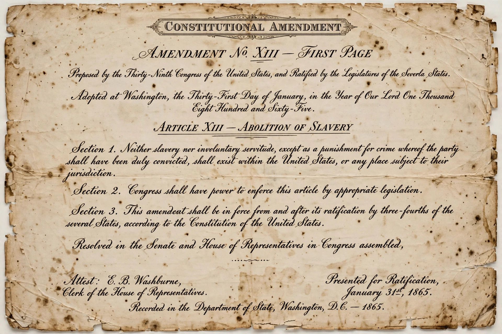

From Wikipedia, the free encyclopedia
| Citizenship Clause | |
|---|---|
| Constitution | Fourteenth Amendment, Section 1 |
| Ratified | July 9, 1868 |
| Key case | United States v. Wong Kim Ark (1898) |
| Overruled | Dred Scott v. Sandford (1857), in part |

The Citizenship Clause is the opening sentence of Section 1 of the Fourteenth Amendment to the United States Constitution. It defines national and state citizenship and is the constitutional foundation of birthright citizenship in the United States.
"All persons born or naturalized in the United States, and subject to the jurisdiction thereof, are citizens of the United States and of the State wherein they reside."
The clause was drafted during Reconstruction to overturn the Supreme Court's 1857 decision in Dred Scott v. Sandford, which had held that people of African descent could not be United States citizens. Senator Jacob Howard of Michigan introduced the citizenship language in the Senate in May 1866. Congress passed the Fourteenth Amendment that June, and it was ratified in 1868. Similar language had appeared in the Civil Rights Act of 1866, which Congress had enacted over President Andrew Johnson's veto.
In United States v. Wong Kim Ark (1898), the Supreme Court held 6–2 that a child born in San Francisco to Chinese immigrant parents—who were themselves barred from naturalizing—was a citizen under the clause, because he was born on American soil and subject to its jurisdiction. The recognized exceptions have been narrow: children of foreign diplomats, children born to members of an occupying enemy force, and, historically, Native Americans born under tribal jurisdiction, a situation Congress addressed with the Indian Citizenship Act of 1924.
The scope of the phrase "subject to the jurisdiction thereof" has periodically been debated, particularly in arguments over whether the clause covers children of unauthorized immigrants. Courts and the prevailing scholarly view have generally read Wong Kim Ark to confer citizenship on nearly everyone born on U.S. soil regardless of parental status; proposed statutes and executive actions attempting to narrow the rule have repeatedly been challenged in litigation.